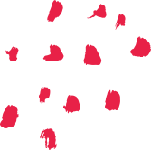

Bem vindo de volta
Contribuição da comunidade:
Ceviche de peixe branco
Por Michel Filipe
Experimente alguma das últimas receitas
Adicionado ontem
Sanduíche de tomate com salada de ovos
Fácil


Entre no mundo gastronômico
Cozinha
Patisserie

Drinks